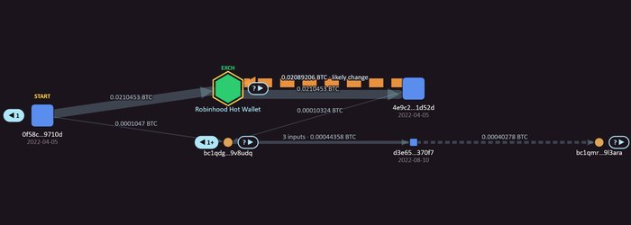
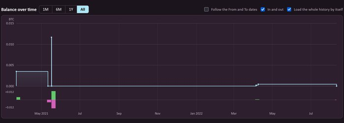

Hopline follow Bitcoin through the chain
Hopline follow Bitcoin through the chain
Paste a Bitcoin address or a transaction ID. See where the money went, which wallets it touched and what looks unusual, then write a report you can hand over.
No address at hand? Try the Colonial Pipeline ransom wallet Try a sample transaction Open a saved workspace
In your browser
No account, nothing to install, and none of your work is stored on a server: it stays on your computer.
Names built in
Exchanges, sanctions lists, ransomware and mining-pool addresses, each with its source and date.
Findings with reasons
Every finding says why. They are leads, not proof, and they are measured on cases where the answer is known.
Paste
A transaction or a wallet. Up to ten at once.
Trace
Click ▶ to follow where each coin went. Names and findings appear along the way.
Report
One HTML file with the evidence, when and where it was fetched, and hashes that can be checked afterwards.

Workspace
A graph of transactions and wallets. Trace the money step by step, group and filter, find patterns and label wallets.
Best for following a payment, or several wallets at once.

Wallet overview
One address as a ledger: balance, totals, every transaction with its inputs and outputs, and the labelled wallets it dealt with.
Best for getting the whole picture of one address.
What it looks for
- Sanctioned wallets
- Consolidations
- Batch payments
- CoinJoin-like transactions
- Peel chains
- Round amounts
- Swap and bridge memos
- Routes between two wallets
Each one comes with its reason, and none of them proves who owns what. See how often the guesses are right on test data where the answer is known.
What leaves your browser
The address or transaction ID you look up goes to the data source you choose: by default mempool.space with Blockstream.info as a backup, or your own server. It can see your IP address and what you look up. Prices come from mempool.space. Nothing else is sent unless you switch on an option that says so, the Claude assistant for example. The code is open under Apache-2.0 and can run from a folder on your computer.
Getting started · Following a payment to a threat actor · Source code on GitHub · Documentation · Apache-2.0 licence ·